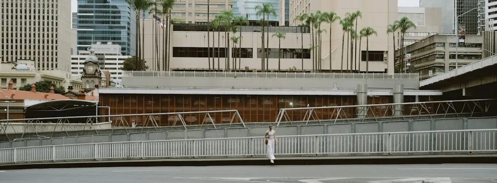

Retaining wall repairs in Brisbane should begin with the wall's movement, drainage, retained height, access and nearby loads. Leaning sleepers, bulging blockwork, wet soil, blocked weep holes and washed-out backfill can indicate that a board replacement alone is not enough. Ask for a site assessment covering posts, foundations, drainage, excavation sequence, material choice and approval requirements. A wall may need an engineer or private certifier where height, surcharge, proximity, pool barriers or surrounding structures affect the design.
For homeowners comparing retaining wall repairs brisbane options, the practical decision is whether the visible damage is isolated or connected to failed supports, water pressure, ground movement or an approval issue.
Retaining Wall Repairs Brisbane Explained
The published guidance from Brisbane Retaining Walls places the first conversation around the wall height, material, access, nearby structures and drainage signs. That information is more useful than describing a wall as simply old or damaged. A leaning sleeper wall, bowed blockwork or a washed-out area can require different investigation and repair pathways.
Describe the wall from both levels. Note where water runs, whether soil stays wet, whether weep holes are blocked, and whether a driveway, house pad, fence, pool, shed or another wall sits above or nearby. Include how materials can be carried or unloaded. These details help a contractor decide whether the next step is a normal quote, drainage diagnosis, engineer pathway or repair-versus-replacement discussion.
- Record the wall material and approximate height.
- Describe movement, bulging, rot, blocked drainage or missing backfill.
- Identify access limits and nearby structures or loads.
Repair or replacement depends on the failed part
A local repair may suit a limited defect where the remaining posts, sleepers and retained ground are sound. A replacement becomes more relevant when supports have failed, timber deterioration is widespread, blockwork is bowing, or wet backfill continues to affect the wall. Replacing one visible board without checking the surrounding bays can leave the underlying problem unresolved.
For a decaying base sleeper, the sequence matters because the bottom board may be holding retained soil. The posts, drainage and adjacent sleepers should be assessed before material is removed. A contractor can then explain whether an isolated replacement is suitable and how the ground will be controlled during the work.
| Observed condition | Useful question | Possible pathway |
|---|---|---|
| Limited timber decay | Are the posts and surrounding sleepers sound? | Local repair may be considered |
| Leaning or bowed wall | Is movement coming from supports, soil or water? | Broader assessment before repair |
| Persistent wet backfill | Where will subsoil water discharge? | Drainage diagnosis or redesign |
Material choice follows the site constraints
Concrete sleeper, timber sleeper, besser block, rock and boulder, and gabion walls each create different questions about access, appearance, drainage and structural design. Steel-post concrete sleepers may suit blocks where long service life and tidy lines are priorities. Treated timber may fit a low-height garden edge or a cost-sensitive replacement. Core-filled blocks can suit rendered finishes and tight boundaries, while rock or gabion systems need suitable stone selection, batter and drainage planning.
The material should be selected after considering the retained soil, wall height, access, nearby loads and the desired finish. A responding contractor still needs to confirm the exact material, design, drainage, price and availability in writing for the site. Where the wall is engineered or council-approved, the design and certification pathway should be explained alongside the construction scope.
Approval questions need more than wall height
The supplied Brisbane guidance says building approval is not required only where all listed conditions fit: the wall plus retained fill or cut is no more than 1 metre, there is no surcharge loading, the wall is at least 1.5 metres from a building or another retaining wall, and it is not part of a pool fence. Treat those as a checklist, not as a height-only rule.
Ask whether a driveway, building, pool, shed or another wall is above the structure. Check whether the wall is close to a building or another retaining wall, and ask where subsoil water will legally discharge. If one condition does not fit, the next pathway may involve a private certifier, an RPEQ engineer or a contractor explaining the required approval process before work begins.
Prepare a quote brief that can be checked
A useful enquiry includes the suburb, approximate height, material, access notes, nearby structures and any movement or drainage signs. Photos may be provided later if requested, so start with a clear written description rather than assuming an image alone will establish the scope.
Compare written responses on the same points: proposed repair or replacement, drainage work, excavation sequence, material, design responsibility, approval pathway, inclusions, exclusions, price and availability. For sites in South East Queensland, the surrounding slope, cut-and-fill history and stormwater path can change the work even when two walls appear to use the same material.
The goal is a scope that explains what is being repaired, what remains, how water is handled and which party confirms design or approval requirements.
- Describe the site. Record height, material, access, nearby structures, movement and drainage signs.
- Separate symptom from cause. Ask whether the defect involves sleepers, posts, retained soil, water pressure or foundations.
- Check the approval pathway. Test the listed height, surcharge, separation and pool-barrier conditions.
- Compare written scopes. Review material, drainage, excavation, design, approval, inclusions, exclusions, price and availability.
| Check | Why it matters | Question to ask |
|---|---|---|
| Movement | The visible defect may involve supports or retained ground | Are the posts, bays and soil moving together? |
| Drainage | Wet soil, blocked weep holes and washed-out backfill affect scope | Where will water be collected and discharged? |
| Approval | Height, surcharge, proximity and pool barriers can change the pathway | Who confirms certification or approval requirements? |
Common questions
Can one bowing sleeper simply be replaced? It may be possible where the defect is limited and the remaining supports are sound. The surrounding bays, retained ground and drainage should be assessed before removing the sleeper.
What information should be included in a repair enquiry? Give the suburb, wall height, material, access notes, nearby structures and any leaning, bulging, wet soil, blocked weep holes or washed-out backfill.
When can approval become part of the repair decision? The supplied checklist includes retained height, surcharge loading, distance from buildings or other walls, and whether the wall forms part of a pool fence. If one condition does not fit, ask about the certifier or engineering pathway.
Which materials may be considered for a replacement? The published options include concrete sleeper, timber sleeper, besser block, rock and boulder, and gabion systems. The site, drainage, access, retained soil and desired finish determine which option needs closer review.
This guide covers inspection questions, repair-versus-replacement decisions, material selection, drainage and approval checks for retaining wall work in Brisbane.